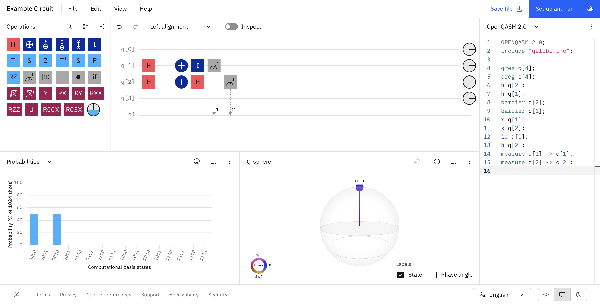
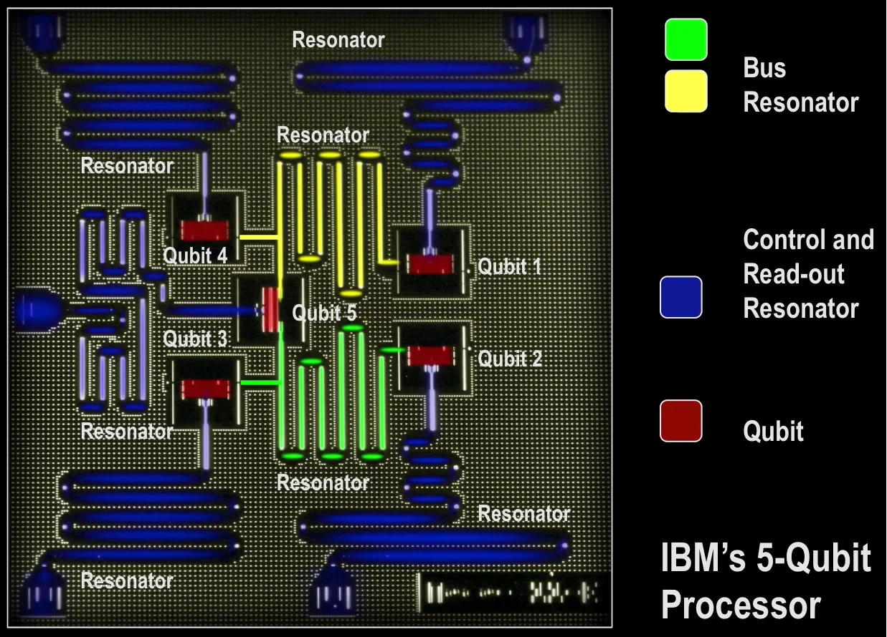

Process
In order for a quantum computer to actually carry out a calculation, it has to go through a complex process that involves various steps that go far outside of the dilution refrigerator.
Quantum Composer
The way that a user interacts with a quantum computer is by using specific software, and for the case of IBM, the Quantum Composer. Quantum Composer is a software designed by IBM that allows users to drag icons onto the screen or use python to create their own quantum circuits. Once a user has submitted a circuit, it is sent to the cloud to start the processing journey.

Created using Quantum Composer
Microwave Electronics
However, qubits can not directly receive signals from Quantum Composer; they only receive signals in the form of microwave pulses. As a result, the user input created by Quantum Composer is sent to a stack of Microwave electronics that convert the circuit into microwave pulses. From the microwave electronics, a control microwave pulse, and then a measurement microwave pulse, is sent to the dilution refrigerator.
Dilution Refrigerator
Each descending level of the dilution refrigerator gets increasingly cooler, with the bottom level reaching the ultracold temperature of 15 millikelvins. This temperature is achieved by mixing two isotopes of helium, Helium-3 and Helium-4, which creates a process that extracts heat from the hardware. The quantum processor unit, which is at the last level of the dilution refrigerator, needs these ultracold temperatures in order to minimize error and prevent decoherence. In order to reach the quantum processor unit, the microwave signals must travel through wires, amplifiers, and isolators that help retain the quality of the microwave and qubit signals.
Quantum Processor Unit
The quantum processor unit itself is made of a silicon wafer that includes qubits and resonators. The resonators that connect qubits enable entanglement, while the resonators that lead to the outside of the chip deliver the microwave signals to and away from the qubits. Additionally, the qubits themselves are made up of Josephson Junctions (a pair of electrodes separated by a thin insulator), which essentially create the quantum aspect of the qubits.
Once the control microwave pulse reaches the quantum processor unit, it uses interference and entanglement to manipulate the qubits into carrying out the calculation. Shortly after, the measurement pulse reaches the qubit through the resonator, collapsing the superposition in order to gain an output of either 0 or 1. This reflected signal travels back up the dilution refrigerator to the microwave electronics, which convert it back into a result that can be seen on the user's computer.

Source: IBM Research